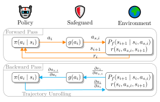

† Equal Contribution
1 Technical University of Munich (TUM)
2 Munich Center for Machine Learning (MCML)

Abstract
The deployment of autonomous robots in safety-critical applications requires safety guarantees. Provably safe
reinforcement learning is an active field of research that aims to provide such guarantees using safeguards. These
safeguards should be integrated during training to reduce the sim-to-real gap. While there are several approaches
for safeguarding sampling-based reinforcement learning, analytic gradient-based reinforcement learning often
achieves superior performance from fewer environment interactions. However, there is no safeguarding approach for
this learning paradigm yet. Our work addresses this gap by developing the first effective safeguard for analytic
gradient-based reinforcement learning. We analyse existing, differentiable safeguards, adapt them through modified
mappings and gradient formulations, and integrate them into a state-of-the-art learning algorithm and a
differentiable simulation. Using numerical experiments on three control tasks, we evaluate how different
safeguards affect learning. The results demonstrate safeguarded training without compromising performance.
@article{walter2025leveraging,
author = {Walter, Tim and Markgraf, Hannah and K{\\"u}lz, Jonathan and Althoff, Matthias},
doi = {10.1109/OJCSYS.2025.},
journaltitle = {{IEEE} Open Journal of Control Systems},
pages = {},
title = {Leveraging Analytic Gradients in Provably Safe Reinforcement Learning},
volume = {1},
year = {2025},
}
Results
Learning with Short-Horizon Actor-Critic in unsafe training and safeguarded training.